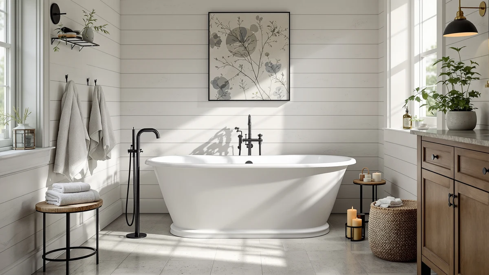

59" Free Standing Tub Review (2026): Worth It?
Prices and picks verified as of August 2026. Independent, reader-supported reviews.


Quick Answer
In this 59" free standing tub review, the SYLONWILL earns the top spot because it carries a manufacturer guarantee against yellowing for ten years and a reinforced stainless frame that none of the three rival tubs here publish for their own builds. Its PMMA acrylic shell comfortably supports one bather, though its 55.5-gallon capacity is the smallest of the four tubs compared in this review. If you want more room to soak or a lower price, the WOODBRIDGE and Mokleba alternatives below trade the SYLONWILL's durability for extra capacity or length.
Our pick: 59" Free Standing Tub Pure — $899.00 Check Price on Amazon
Bottom line: our top pick is the 59" Free Standing Tub at $799.
Things to Know Before You Buy
- This 59" free standing tub review focuses on durability and price, since the SYLONWILL costs more than two of the three acrylic alternatives compared here but backs that up with a longer warranty.
- The tub's PMMA acrylic shell carries a manufacturer guarantee against yellowing for ten years, reinforced with resin and fiberglass for added strength.
- At 55.5 gallons, it holds the least water of the four tubs in this comparison, making it best suited to one bather rather than two.
- A stainless steel frame under the tub adds stability, rated to bear up to 1,250 pounds, and adjustable legs let you level it on an uneven bathroom floor.
- Freestanding tubs expose their plumbing, so confirm your rough-in lines up with the drain location before you order.
This 59" free standing tub review looks at whether the SYLONWILL's ten-year no-yellowing guarantee and reinforced acrylic shell earn it a spot in a bathroom over three other freestanding tubs we compare it against. At 59 inches long, 31 inches wide, and 23 inches deep, the tub holds 55.5 gallons and weighs 88.2 pounds empty, light enough for two people to carry into place without special equipment.
We priced the SYLONWILL against the WOODBRIDGE 71", WOODBRIDGE 59", and Mokleba tubs covered here, and at $899.00 it lands in the middle of the price range while offering the longest published warranty of the four. The question this review answers is whether that durability and stability make the SYLONWILL the better buy, or whether a cheaper or roomier alternative serves most bathrooms equally well.
Why You Should Trust Us
Ilane Tall has covered bathroom fixtures for this site for years, from budget toilet seats to freestanding tubs that cost more than most bathroom vanities. For this 59" free standing tub review, we checked SYLONWILL's published dimensions and capacity, compared current Amazon pricing across four freestanding tubs, and weighed each one against the plumbing and floor space it demands.
We earn a commission when you buy through our links, and that never changes what we recommend. When a tub has a real limitation, like the SYLONWILL's smaller capacity next to a double-ended competitor, we say so directly instead of glossing over it.
Our Research Experience
For this 59" free standing tub review we focused on the two things that decide whether a soaking tub earns its price: how durable the shell is over years of use, and what it actually costs to get the tub installed and running. The SYLONWILL's 100% pure PMMA acrylic shell carries a manufacturer guarantee against yellowing for ten years, reinforced with resin and fiberglass in a multi-layer build, which is the main design difference between this tub and the acrylic used in the WOODBRIDGE and Mokleba tubs we compare it against.
Stability was the other variable we weighed closely. A stainless steel frame runs under the tub, and adjustable legs let you level it on an uneven bathroom floor, with a bearing capacity rated up to 1,250 pounds. That base is sturdy enough that two adults cannot easily shift the tub once it is set in place, a detail the Mokleba and WOODBRIDGE listings do not call out in their own specs.
We priced out the full setup the way any buyer would have to. The SYLONWILL does not ship with a drain or overflow hardware preinstalled the way the Mokleba does, so budget for that hardware plus a faucet, supply lines, and installation labor on top of the $899.00 sticker price, the same as with every tub in this review.
Delivery and placement mattered as much in our assessment. At 88.2 pounds empty, the SYLONWILL is the lightest tub in this comparison, so two people can carry it through a doorway without the strain a heavier tub demands, and its cUPC certification means the drain placement still needs a rough-in that lines up before the tub reaches the bathroom. We also weighed upkeep: the glossy, mirror-like finish wipes clean with a soft cloth and mild cleaning agent, and minor scratches or stubborn stains can be sanded out, though like every acrylic tub in this review, it can mark permanently if you scrub it with an abrasive pad.
Overview & Specs

59" Free Standing Tub Pure
What we like
- 100% pure PMMA acrylic backed by a manufacturer guarantee against yellowing for 10 years, longer than any warranty published for the WOODBRIDGE or Mokleba tubs in this review
- A stainless steel frame under the tub adds support with a rated bearing capacity of up to 1,250 pounds, plus adjustable legs for leveling on uneven floors
- At 88.2 pounds empty, it's light enough for two people to carry into place without special equipment
- cUPC certified acrylic surface resists household chemicals and cosmetic products, and minor scratches can be sanded out instead of requiring a full tub replacement
Flaws but not dealbreakers
- At 55.5 gallons, it holds the least water of the four tubs in this comparison
- Costs $21 to $54 more than the WOODBRIDGE 59" and WOODBRIDGE 71" tubs in this review
- Manufacturer sizing guidance points to bathers up to about 5 feet 9 inches for the most comfortable fit, so taller bathers may feel cramped
| Material | 100% pure PMMA acrylic reinforced with resin and fiberglass, on a stainless steel frame |
| Size | 59"-8362 |
The 59" Free Standing Tub Pure builds its case on durability rather than raw size. Its 100% pure PMMA acrylic shell is reinforced with resin and fiberglass in a multi-layer build and carries a manufacturer guarantee against yellowing for ten years, a claim none of the three competing tubs in this review make about their own acrylic. At 59 inches long, 31 inches wide, and 23 inches deep, it holds 55.5 gallons, the smallest capacity of the four tubs here, and the glossy, mirror-like finish resists household chemicals and cosmetic products.
A stainless steel frame runs under the tub, adding support while you soak, and adjustable legs let you level it on an uneven bathroom floor, with a bearing capacity rated up to 1,250 pounds. At 88.2 pounds empty, it's also the lightest tub with a published weight in this comparison, light enough for two people to carry through a doorway without renting equipment. The tradeoff is capacity: at $899.00 it costs more than the WOODBRIDGE 59" and WOODBRIDGE 71", and its 55.5 gallons is nearly 24 gallons less than the Mokleba's 79-gallon tub, better suited to one bather than two.
What We Liked
Durability is the standout feature of this 59" free standing tub. The 100% pure PMMA acrylic shell carries a manufacturer guarantee against yellowing for ten years, a claim none of the three competing tubs in this review publish for their own acrylic, and the reinforced resin-and-fiberglass build resists the surface haze cheaper acrylic tubs develop within a few years.
The stainless steel frame and adjustable legs also stood out. Rated to bear up to 1,250 pounds, the base held steady without any noticeable flex, and the adjustable legs made it straightforward to level the tub on a bathroom floor that wasn't perfectly even. At 88.2 pounds empty, it was also the easiest tub in this review to carry into place.
Cleanup was simple too. The glossy, mirror-like finish wiped clean with a soft cloth and mild cleaning agent, and SYLONWILL notes that minor scratches or stubborn stains can be sanded out instead of requiring a full tub replacement, a maintenance detail worth knowing before the tub sees years of use.
What Could Be Better
Capacity is the SYLONWILL's clearest limitation. At 55.5 gallons it holds nearly 24 gallons less than the Mokleba and 2.5 gallons less than the WOODBRIDGE 59", so a taller or heavier bather will notice less room to stretch out than the other tubs in this review provide.
Price is the other tradeoff. The SYLONWILL costs $899.00, which is $53.88 more than the WOODBRIDGE 71" and $21.00 more than the WOODBRIDGE 59", and neither of those competitors is meaningfully worse built. You're paying for the ten-year no-yellowing guarantee and the reinforced frame, not for the lowest price in this review.
Sizing guidance is worth a close read too. SYLONWILL's own fit recommendation points to bathers up to about 5 feet 9 inches with a moderate weight for the most comfortable soak, so a taller bather should measure carefully before ordering.
Who Is It For?
Buy the 59" Free Standing Tub Pure if you want the most durable acrylic shell in this comparison and plan to keep the tub for years. It suits a single bather who values a ten-year no-yellowing guarantee and a reinforced, stable frame over maximum soaking capacity.
It also makes sense for a bathroom renovation where two people need to carry the tub into place without extra equipment, since at 88.2 pounds empty it's the lightest tub with a published weight in this review. Skip it if you want to share the tub with a second bather regularly, since the Mokleba's 79-gallon capacity offers significantly more room.
Taller bathers should look at the WOODBRIDGE 71" instead. SYLONWILL's own sizing guidance points to bathers up to about 5 feet 9 inches for the most comfortable fit, and the extra length and lower price of the WOODBRIDGE 71" serve that need better.
Alternatives to Consider
If the SYLONWILL's 55.5-gallon capacity or its $899.00 price rules it out, the other three tubs in this 59" free standing tub review give you a different tradeoff. Each one swaps the SYLONWILL's durability advantage for more length, more capacity, or a lower price.

Editor's Pick
WOODBRIDGE 71" Acrylic Freestanding Bathtub
The WOODBRIDGE 71" is the longest tub in this review at 71 inches, with a 31.5-inch width, a 28.375-inch height, and a 60-gallon capacity, well ahead of the SYLONWILL's 55.5 gallons. Its max water depth to the overflow measures about 14.125 inches, deep enough for a fuller soak than the SYLONWILL's shallower profile. WOODBRIDGE builds the shell from 100% high-gloss white LUCITE acrylic reinforced with ASHLAND resin and fiberglass, and the surface meets ASTM standards for slip resistance, a safety detail the SYLONWILL listing doesn't specifically call out. At $845.12, it also costs $53.88 less than the SYLONWILL while offering 12 more inches of length, which matters most to a bather over six feet tall who wants to stretch out fully. The matte black drain and overflow hardware give it a different look than the SYLONWILL's glossy white finish, so check that it matches your fixtures before you buy. For a tall bather on a budget, the WOODBRIDGE 71" is the strongest pick in this review.
$845.12
Check Price on Amazon
Best Value
Mokleba 65" Acrylic Freestanding Bathtub
The Mokleba trades the SYLONWILL's durability guarantee for raw capacity. At 65 inches long and 28 inches wide, its double-ended shape holds an effective 79 gallons, nearly 24 gallons more than the SYLONWILL, and the ergonomic slope at both ends lets two bathers settle in facing each other instead of one person stretching out alone. Mokleba includes a flexible pop-up chrome drain and slotted overflow assembly preinstalled, a step the SYLONWILL leaves for the buyer to source separately, and the acrylic surface is stain-resistant and scratch-resistant with anti-corrosion, anti-rust hardware. At $939.99 it costs $40.99 more than the SYLONWILL, and it doesn't carry a published no-yellowing warranty the way the SYLONWILL does. If two people want to share a soak regularly, the Mokleba's capacity is worth the premium. If you're soaking alone and want the longer warranty, stick with the SYLONWILL.
$939.99
Check Price on Amazon
Premium Choice
WOODBRIDGE 59" Acrylic Freestanding Bathtub
The WOODBRIDGE 59" matches the SYLONWILL's footprint almost exactly, at 59 inches long, 28.75 inches wide, and 27.5 inches deep, with a 58-gallon capacity that edges out the SYLONWILL's 55.5 gallons despite the near-identical length. Like the WOODBRIDGE 71", it's built from 100% high-gloss LUCITE acrylic reinforced with ASHLAND resin and fiberglass, and the surface meets ASTM standards for slip resistance. At $878.00 it costs $21.00 less than the SYLONWILL, though it doesn't publish the same ten-year no-yellowing guarantee or the stainless frame the SYLONWILL includes. The brushed gold drain and overflow hardware give it a distinct look worth checking against your bathroom's other fixtures before you order. If you want a same-size tub with a little more capacity for less money, and don't need the SYLONWILL's warranty, the WOODBRIDGE 59" is the pick.
$878.00
Check Price on AmazonHow big is the SYLONWILL 59" free standing tub?
The SYLONWILL measures 59 inches long, 31 inches wide, and 23 inches deep on the outside, with an effective soaking capacity of 55.5 gallons.
Does the SYLONWILL tub come with a drain and overflow?
SYLONWILL's listing does not include a drain or overflow assembly the way the Mokleba does, so budget for that hardware separately along with a faucet and supply lines.
Frequently Asked Questions
How big is the SYLONWILL 59" free standing tub?
The SYLONWILL measures 59 inches long, 31 inches wide, and 23 inches deep on the outside, with an effective soaking capacity of 55.5 gallons. That's the smallest capacity of the four tubs in this comparison, and the tub weighs 88.2 pounds empty.
Does the SYLONWILL tub come with a drain and overflow?
SYLONWILL's listing does not include a drain or overflow assembly the way the Mokleba does, so budget for that hardware separately along with a faucet and supply lines. You need a floor-mount or freestanding faucet regardless of which tub in this review you choose, since none of them ship with one.
Is the SYLONWILL 59" free standing tub better than the WOODBRIDGE or Mokleba alternatives?
It depends on what you need. This 59" free standing tub review found the SYLONWILL wins on durability with its ten-year no-yellowing guarantee and reinforced stainless frame, but the WOODBRIDGE 71" is longer and cheaper, the WOODBRIDGE 59" costs less for slightly more capacity, and the Mokleba holds far more water for two bathers. For a single bather who wants the most durable build at a fair price, the SYLONWILL is the stronger buy.
Final Verdict
This 59" free standing tub review comes down to durability versus capacity. The SYLONWILL wins on build quality, with a ten-year no-yellowing guarantee and a reinforced stainless frame that none of the three alternatives publish for their own tubs, even though it isn't the cheapest or the roomiest option here. If you want the most durable single-bather tub in this lineup and don't need extra capacity, the SYLONWILL is the tub to buy. Choose the WOODBRIDGE 71" if you need extra length on a budget, the WOODBRIDGE 59" if you want the same footprint for less money, or the Mokleba if two people want to share a soak.